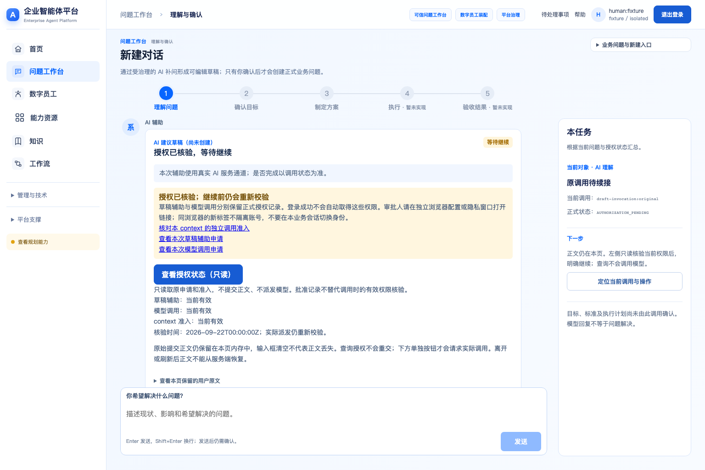
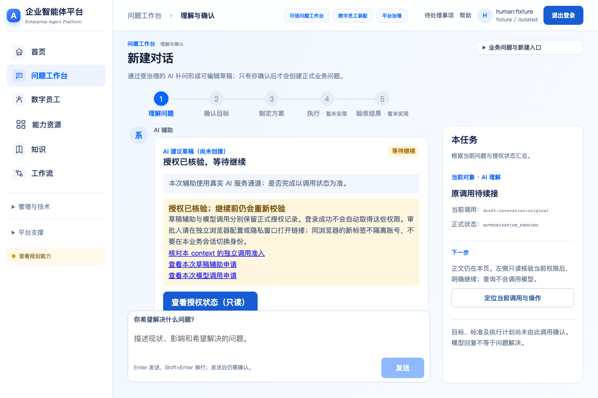
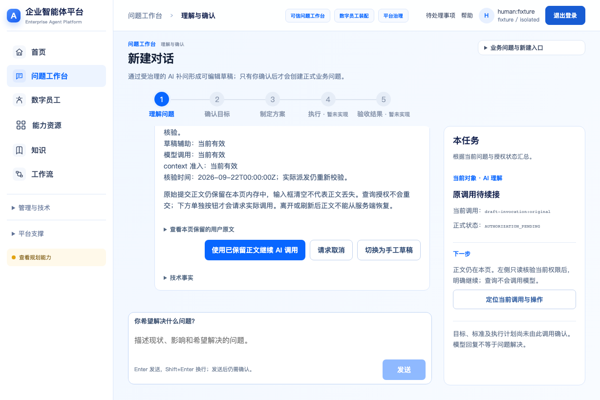

参考 R30 P02

受控fixture页面，不代表真实模型或Native执行；不是视觉接受记录。100%截图视口1536×1024，与P02原图尺寸相同。125%为等效CSS视口1228×819预检，实际浏览器缩放仍待TLS入口恢复后验证。R30用户消息方向与最新明确要求冲突处，按用户右/系统左实施。



剩余差异：公共导航/标题层级与P02不完全一致；精确授权卡没有完整专图，借用IAM07信息层次并显示实际Grant语义；整体视觉接受、真实浏览器缩放和同案执行均未完成。完整菜单改版不在本批。